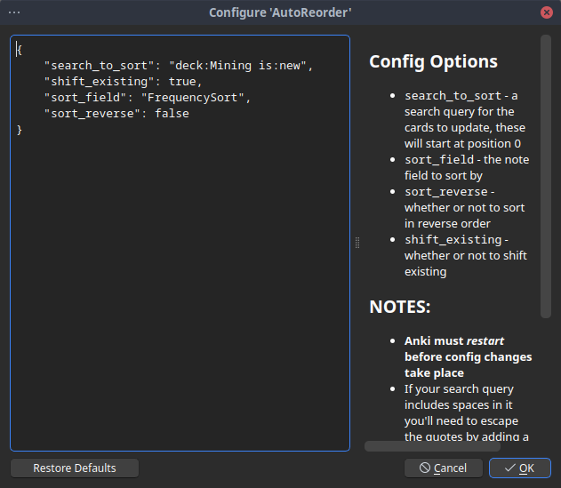
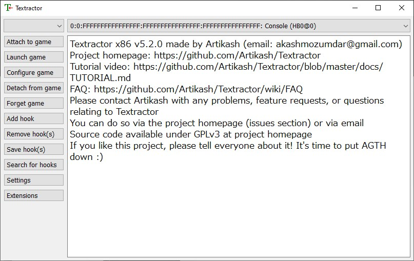
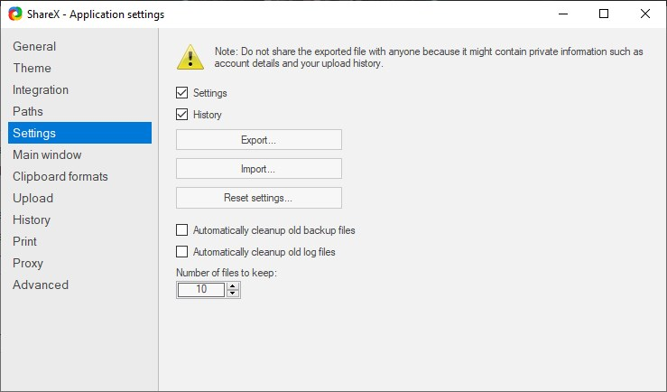
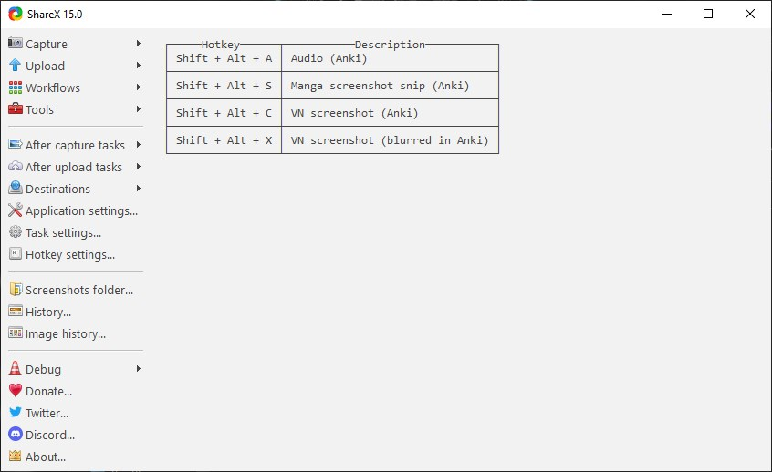
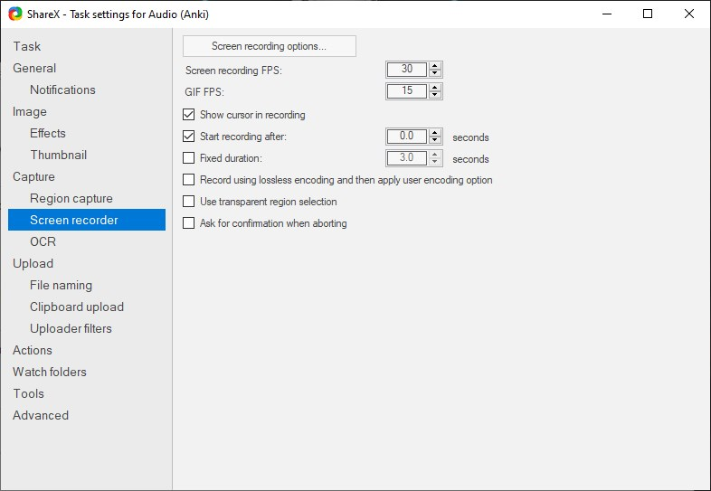
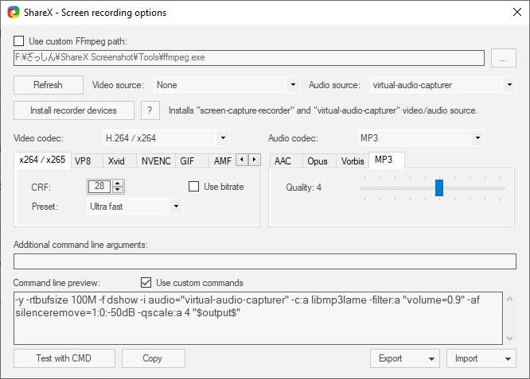
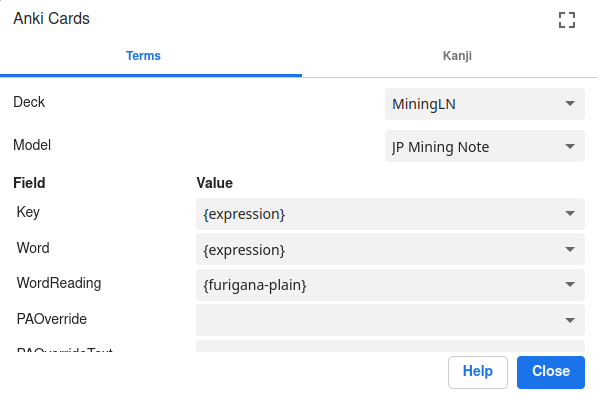
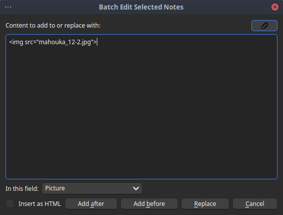

Mining
Mining
- Choosing a note type
- Using Marv's frequency sorting tool
- Visual novel setup
- Anime setup
- Novel setup
- Manga setup
- Games setup
If you did everything right in the previous section, you should be able to look up words in Japanese with Yomitan. This section will cover everything you need to know to setup a proper mining experience. Mining is usually something one does after going through a vocabulary deck like Kaishi 1.5k, but some people start a mining deck halfway through Kaishi and there's nothing wrong with that. It is up to you, I recommend going through Kaishi first as it doesn't really take too much time in the grand scheme of things. You can and should start immersing in native content from day one, but it'll make more sense after you've memorized some vocabulary.
Setting up Anki and Yomitan for mining
In this section, we discuss various Anki card notes, install one and setup Yomitan for mining.
Choosing a note type
There are multiple note types available to Japanese learners. The most popular ones are listed on Aquafina's alternatives list. We are going to use Arbyste's fork of Aquafina's jp-mining note. Sadly, the original maintainer of this note type went silent, in the meantime Arbyste is maintaining it. To install it, start by reading the preface. Then, follow the instructions here and make sure you set up Yomitan accordingly unless you're using my Yomitan settings, in which case you should be good to go.
Using Marv's frequency sorting tool
Marv's frequency sorting tool can be used to get the harmonic mean of multiple frequency dictionaries. That mean can then be used to reorder our new cards by frequency. If you have imported my Yomitan settings, you don't need to change anything in Yomitan. If you imported my add-ons as well, you're good to go. If that isn't the case or if for some reason you would like to call it anything else, then you need to go to Tools > Add-ons and then double click on AutoReorder. It should open a config file and you can change the name of the deck (which by default is Mining if you imported my add-ons directly) to whatever you want to call it.

{kind=link}
Specific mining setups
This part of the setup guide discusses various possible mining setups. We have a visual novel, anime, (light) novel and manga setup. This guide assumes you're on Windows. A guide for Linux can be found here.
Visual novel setup
In this section, we get all the tools we need to mine from visual novels.
Textractor
The first step is to get a texthooker. A texthooker is a tool that lets you hook the gametext into your browser to let you use Yomitan on it to mine. The recommended texthooker nowadays is Textractor.

{kind=link}
You can download it here. Just get the latest version for x86 and x64 (which one to run will depend on your game, it's usually x64) and run the .exe file. After you do this, go to this comment and download the texthook-datelastupdated.zip file, where datelastupdated is the latest date where it was updated, e.g. 20240314. Unzip the file, and paste its content in each respective version of Textractor, making sure not to confuse the two. It will ask you if you want to replace the contents, say Yes. (Thanks C-G for mentioning this gets us a better, Alpha version of Textractor). Next, open Textractor and go to Extensions. If you don't see Textractor-Sender, download it from here and add the .xdll file to your extensions by right-clicking on the list.

Once this is done, we can now hook the text. To do this, start by selecting a process by pressing on the empty box in the top left and look for your visual novel.

Once this is done, simply click on your visual novel to go to the next frame. Then you click on the upper bar (where Console is written, in Textractor) and you cycle through the options until you find one that has the text on that line in the visual novel, and nothing else.

exSTATic
Next, we need to choose a way to get the hooked text into your browser. There are two ways to do this: clipboard inserters and websockets. The second option is cleaner and generally less error-prone. We are going to use exSTATic which you should be able to find here for Firefox and there for Google Chrome. Otherwise, you can follow the instructions here. Once you have installed the browser extension, you should open the tracker page and I suggest you bookmark it because this is where you will be doing your mining.

ShareX
Finally, we need to get a tool to extract the picture and (if needed or desired) the audio of the sentence you're mining from. This tool is ShareX. First, start by installing it and importing my settings. To do this, go in Application settings... on the left (notice the theme might be different):

After this is done, go into Settings > Import... and use my settings file:

{kind=link}
If you go back to the main menu, you should now be greeted with the following:

{kind=link}
If you want a different theme (I use the Dark theme for instance), you can go into Application settings... > Theme:

Now, let's go back to the left and click on Hotkey settings.... This brings up the following menu:

This has four options. The first one is Audio (Anki), which lets us record some audio and have it be sent directly to the collection.media Anki folder. This means that if you mine a card and you record some audio right afterwards, it'll send what you recorded in the audio field of the mining deck. This is useful if you want to record a voiced line in your visual novel for instance. The second option is for a snipping screenshot which is useful when reading manga. The last two options are what we want for visual novels. The third option captures the picture from the visual novel and puts it in the field of the new card you just mined. The fourth option does the same, but also blurs the picture, provided you are using my Yomitan settings. This is useful if the visual novel scene is not safe for work, or because you simply do not want others to see it without you explicitly clicking on it.
Sadly, if you try to record audio or take a screenshot right now, it will fail for two reasons:
- The collection.media folder is not the same for you and me.
- We have no tool to record audio.
Let us start with the first issue. Start by clicking on the wheel next to each option of the options above: Audio, screenshot, etc. This opens up the following menu:

Notice the blurred parts in the bottom (it shouldn't be blurred on your end). This is my collection.media folder path. You need to change it to yours. The first part is your Windows username, the second is your Anki profile name. You can also type %appdata% in the Windows search bar, hit the Enter key and find your collection.media folder path directly that way, usually under Roaming > Anki2. Either way, rewrite the path for each of the four options. It should look like this (with different USERNAME and PROFILE):

This fixes the first issue. To fix the second, click on the cog wheel next to the Audio option under Hotkey settings... > Audio. Next, go to Screen recorder:

{kind=link}
Next, open up Screen recording options... and click on Install recorder devices. Once this is done, check that Video Source: is set to None and Audio Source: is set to virtual-audio-capturer:

{kind=link}
You can now quit this screen and you should have a functional ShareX setup. If you have a mouse with external buttons, I highly recommend using Xelieu's one-click scripts. To use it, install AutoHotKey. Once you want to use it, simply launch the script above by double-clicking on it. This allows you to use the Screenshot and Audio shortcuts with your mouse. On my mouse, the upper most button uses Screenshot (VN) and the lowermost button uses Audio (Anki).
Mining recap for visual novels
The visual novel setup has a lot of moving parts, so here's a quick recap.
To mine a word, we now open up our visual novel, Textractor, the exSTATic tracker page and ShareX. Follow the steps in the Textractor section to get the text hooked on the exSTATic tracker page, and use Yomitan to mine words by clicking on the big green button in the pop-up window. Once this is done, take a screenshot of the visual novel with either Shift+Alt+C (Shift+Alt+X if you want the blur) or your mouse button if using Xelieu's hotkeys. If the line is voiced and don't mind spending the time to grab the audio, record the audio with either Shift+Alt+A or the other mouse button. Congratulations, you have mined a word from your visual novel!
Anime setup
This section will give you tools to smooth out your anime mining experience.
asbplayer
There are a few possible setups out there like this MPV script from Anacreon or Animebook. These are all good but my favorite option by far is asbplayer. This requires you to have both the anime file and its subtitle downloaded somewhere on your PC. Currently, this setup only works well on Google Chrome (or Chromium-based browsers) due to audio issues. If you want to use it on a streaming website, use the Chrome extension.
To mine from an anime, you first need to make sure the asbplayer settings are correct for your mining deck. Go through those steps:
- Open the main page and click on the cog wheel on the top right that says
Settings. - Fill in your deck (mine is
MiningAnimebut yours is most likely simplyMining) and Note Type (mine isJP Mining Note). - Fill in the Audio Field (mine needs to be
SentenceAudio) and Image Field (mine needs to bePicture). - Under
Miningon the left, checkUpdate last card. - (Optionally) Change your font under
Subtitle Appearance > Subtitle Font Family. - Make sure your
AnkiConnectadd-on is set correctly in Anki, see this video.
For instance, here are my settings:

You can now mine anime. To do so, here are the steps you need to take:
- Drag-and-drop an anime video file and a subtitle file together on the main page.
- Hover over the word you want to mine on the subtitles and mine it using Yomitan.
- Hit
Ctrl+Shift+Uto automatically add a screenshot and the sentence audio to your card. You can customize that shortcut underSettings > Keyboard Shortcuts > Update last-created Anki cardif you'd like.
That's it, your word added using Yomitan now has the screenshot from the anime and the sentence audio from it!
Novel setup
This section discusses how to mine from (light) novels.
ッツreader
The best tool to mine from (light) novels in my opinion is hands-down ッツreader. It requires HTML/EPUBs which is the standard file type for novels. Simply drag-and-drop the file on the main page and start reading. You can then use Yomitan to mine. Sadly, you can't really get sentence audio that way. You can add pictures if you'd like. Here's how I go about it.
- I have a separate mining deck for novels that I call
MiningLN. When I want to mine light novels, I change theAnki > Configure card format... > Deckoption in Yomitan toMiningLN, like so:

{kind=link}
- When I start a new novel, I add the cover picture (and potentially other pictures from the light novel) in an Anki card by drag-and-dropping the picture on the
Picturefield in Anki. Here's an example from the 12th volume of 魔法科:

- Clich on the
<>on the right to open the details. This gives you something of the form<img src="">. Copy this text by selecting it and usingCtrl+CorRight Click > Copy. Continuing from the example above:

- Select all the cards you want to add this picture to in the browser. If it's all of them, simply click on one card and then hit
Ctrl+A. - In the top left click on
Edit > Batch Edit...(remember to install the Batch Editing add-on if you don't yet have it). - This opens a window. Paste the name of the picture that you copied from before and make sure to change the field to your picture field otherwise it will delete the word field! In my case, that's simply
Picture. Finally, hitReplace. It should look like this:

{kind=link}
- If the above worked, all your cards should now have the picture you wanted to add to the cards. You can now merge these cards back into your main mining deck. Simply click on one of the card and then
Ctrl+Ato get all of them (or select them yourself), thenRight Click > Change Deck. This opens a window and you can then select your mining deck, in my caseMining.
In the case of light novels, I usually add the cover until I hit a new picture. When that new picture appears, every new word that happens after it gets this picture. Rinse and repeat. You can use this technique to add any sort of picture to any sort of card.
Manga setup
We come to one of my favorite immersion medium, manga.
mokuro
Manga mining usually relies on OCR to extract text from the panels. My favorite tool for this is mokuro. There are two, maybe three ways to use it. You can use this tool as an OCR to process your own manga, in which case please follow this guide (do be warned, it requires some technical proficiency). You can also directly upload manga to the reader, which requires that you have manga files. Finally, and the option I usually prefer is to use the catalog directly.
Simply choose one of the manga available and start reading. To do so, click on the manga that interests you to import it and then hover over the words with Yomitan. Here's an example from 3月のライオン, notice the right part has a different font because I'm hovering over it:

You can now use Yomitan to mine that word. To advance in the manga, you can use the left and right keys. Once you've mined a word you can then use ShareX to select and crop the manga panel to add it to your word. I use Shift + Alt + S to cut off the panel. Once that is done, your Anki card should have the panel in the Picture field, provided you're using my settings.
Games setup
This section has mostly been written by Mansive, big thanks! I only edited some of the details and writing, but the core was written by them.
Agent
Agent allows you to hook games that other text hookers have trouble with. Examples include:
- Hogwarts Legacy
- FINAL FANTASY VIII Remastered
- Steins;Gate
- Emulated games on the Nintendo Switch, PS Vita, etc.
- Otome games that were only released on consoles
...and more!
Its downside is that someone must create a script for the game for Agent to text hook it; but on the other hand, the hook will be near-flawless. Unlike with Textractor, you won't have to hunt for viable hooks or mess around with extensions and regex.
As such, it's recommended to first check if the game can be text hooked with Agent before using other texthookers such as Textractor.
There are multiple places to view the list of available Agent scripts:
- Agent Scripts GitHub Repository
- This is where every script can be seen. Instead of using your browser's search function or
Ctrl + F, you should use GitHub's search bar for reliable results. - KanjiEater's Agent Scripts Catalog
- Contains scraped images for supported games
- Might be missing some recently supported games, or assign wrong images to games
- Otome Games List
- Made specifically for supported otome games
- Contains high resolution images and opening movies
- Does not include all otome games
How To Use Agent
Upon launching Agent, click on the Settings button at the top. There are some settings that you probably want to change.
- Disable
Machine Translate - Ensure
Realmsis disabled - If you're planning to use exSTATic or any texthooker page that supports websockets, enable
WebSocketServerand disableClipboard
The settings menu should look something like this after the changes:

Navigate back to the main menu so that we can download scripts into Agent. Click on the second long box then click the Update scripts button.

The next time you click on the box, you should see a dropdown list of scripts. Search for your game's title in English letters or romaji and click on the result.

Next, click and drag the target button towards the game's window.

Finally, click on the Attach button and play through the game. Text should appear in Agent's black console.
If you are using Agent on emulators, you must attach before launching the actual game! Otherwise, Agent won't be able to hook properly.

In Agent's console, some scripts tell you what version is needed, or from which source the game needs to be from. Trying to hook a game that has a different version or source from what scriptmaker intended can sometimes result in erroneous or empty output.

Did you get any weird errors? Check out the official Agent docs to see methods for fixing the errors, and if you still can't fix them, try asking in the Agent Discord.
Compatible Emulators
Make sure to check out this link to see which emulator versions are compatible. If you find that Agent does not output text, it's possible that your emulator's version is too new. The versions that are compatible may change in the future.
Nintendo Switch Emulators
The only Nintendo Switch emulators you should be looking at for Agent compatibility are:
- Ryujinx
- Recommended over Sudachi because of its greater accuracy and library of supported games
- Needs to be specifically version
1.1.1340
- Sudachi
- Has potentially better performance than Ryujinx
- Any version will work
- Download link will not be provided due to legal reasons, you'll need to search for it yourself
Creating Agent Scripts
Can't find a script for your game? Try making it yourself! Scripts for simple games like visual novels might only need basic programming and little, or nonexistent, reverse engineering skills. On the other hand, complex games will require programming intuition, a decent amount of reverse engineering knowledge, and a good chunk of your week.
If you're interested, head into the Agent Discord for tutorials and information regarding the script-making process.